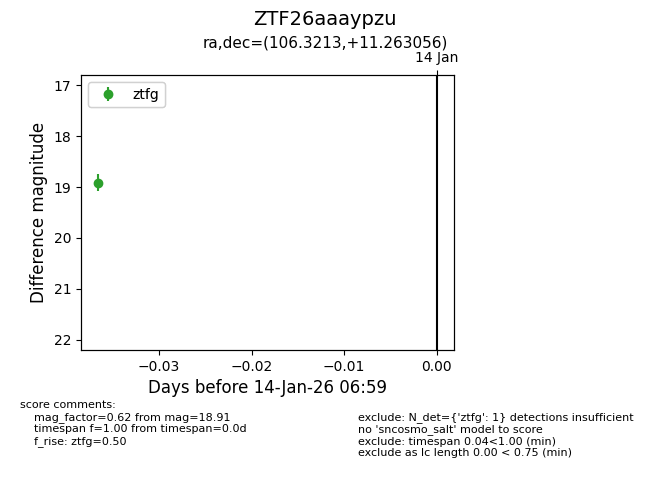
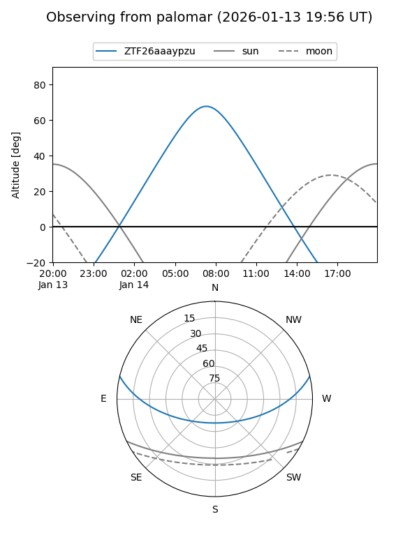

ZTF26aaaypzu
Target ZTF26aaaypzu at 2026-01-14 07:00
Aliases and brokers:
FINK: link
Lasair: link
ALeRCE: link
alt names
ZTF26aaaypzu (ztf,fink_ztf)
Coordinates:
equatorial (ra, dec) = 106.3213,+11.26306
equatorial (HMS+DMS) = 07:05:17.11,+11:15:47.00
galactic (l, b) = (204.4023,+8.15000)
Flags:
Photometry:
last ztfg=18.91
1 ztfg detections
Lightcurve

Visibility


Additional plots